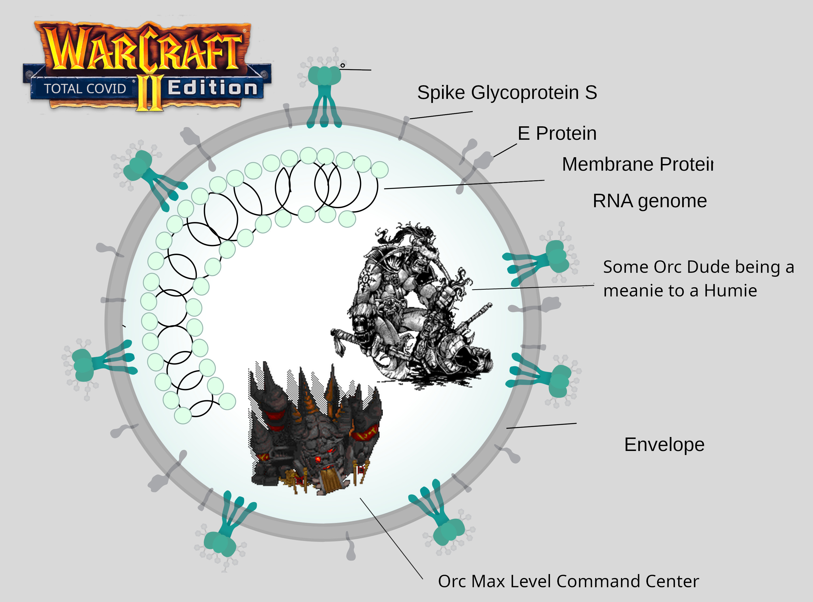

Have you studied the above pictograph?
Good! Now take the test:
A Covid Map 1.pud
Don't know how to use it?
You're in luck, because I'm about to tell you what to do.
You take the `.pud` file and pu(d)t (get it???) into the `./maps` directory of wherever your `WarCraft 2` is installed.
Then you start `WarCraft 2` and just press S C E select the map and Ogo!